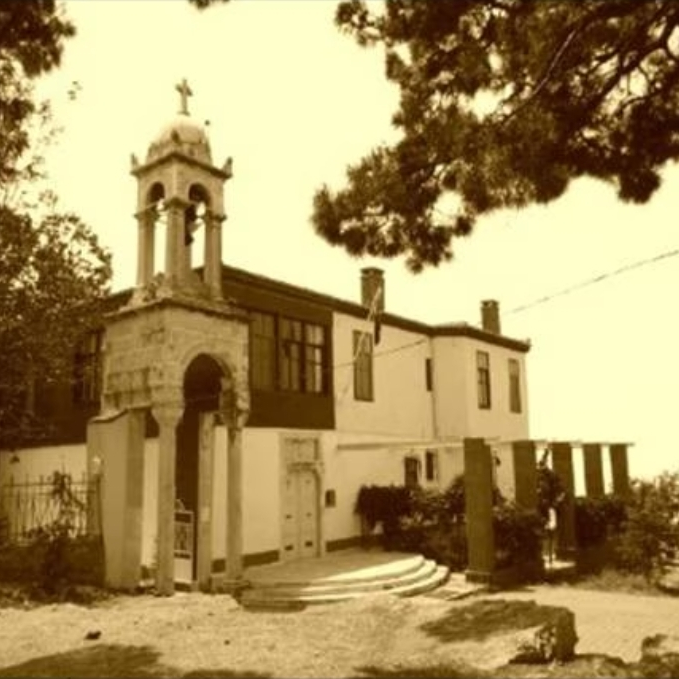
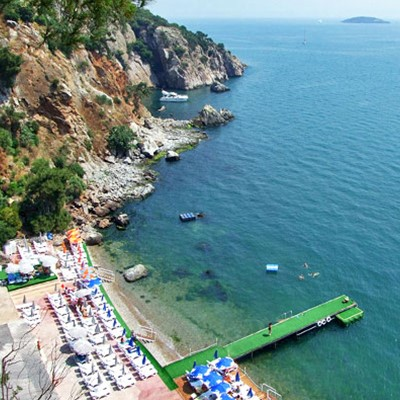

İstanbul Adalar içerisinde gittiğimiz ilk ada Büyükada'ydı. Gittiğimiz yerlerde bisiklet kiralama alışkanlığı da aynı zamanda burada başladı.
Adaya gittiğinizde ziyaret edebileceğiniz turistik yerlere bisiklet ile gitmek oldukça zor oluyor çünkü genel olarak adanın üst tarafında kalıyorlar.
Buralara elektrikli dolmuş tarzında araçlarla İstanbul Kartınızla gidebilirsiniz. Ancak bisikletle de adanın kıyı şeridinde güzel bir rota oluşturabiliyorsunuz.
Yemek yiyebileceğiniz yerler genel olarak kıyı şeridindeki balık restoranları oluyor.
Adanın Başlıca Turistik Yerleri
Büyükadada Denize Girilebilecek Yerler
- Eskibağ Plajı
- Halik Koyu Plajı
- Prenses Koyu Plajı
- Yörükali Plajı
- Nakibey Plajı
- Kumsal Plajı
- Aya Nikola Plajı